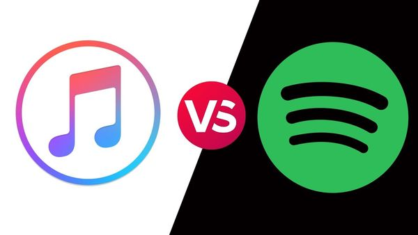
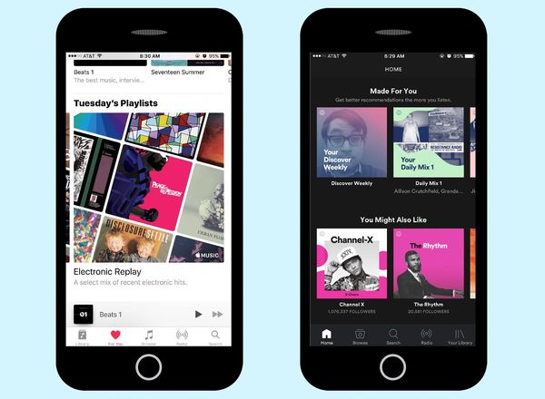

Giới thiệu về Spotify
Đây là nền tảng stream nhạc trực tuyến giống với Nhaccuatui, Zing MP3 hoặc Apple Music. Điểm khác biệt của ứng dụng này nằm ở khả năng hỗ trợ nhạc đa nền tảng, giúp người dùng có thể nghe nhạc trực tuyến. Người dùng dễ dàng kiếm tìm cho mình một nghệ sĩ hoặc thể loại âm nhạc mình yêu thích chỉ trong tích tắc.
Theo số liệu thống kê năm 2017, ứng dụng Spotify là dịch vụ stream nhạc sở hữu lượng người dùng lớn nhất toàn cầu. Xếp vị trí thứ 2 là Apple Mucsic với 27 triệu người dùng trả phí. Ứng dụng Spotify ra mắt tháng 10/2008 và sau hơn 2 năm hoạt động đã có hơn 10 triệu người dùng. Trong đó có 2,5 triệu người sử dụng trả phí.
Cuối năm 2012, ứng dụng này đã tăng lên 20 triệu người dùng, trong đó có 5 triệu người trả phí. Tới đầu năm 2015, con số này cán mốc 60 triệu người dùng, trong đó có 15 triệu người dùng trả phí. Tính tới thời điểm hiện tại, Spotify có số lượng người dùng tăng lên 140 triệu người dùng hàng tháng. Trong đó có tới 60 triệu người dùng trả phí.
Giới thiệu về apple music
Apple Music là dịch vụ thuê bao nhạc số, cho phép người dùng đăng ký thuê bao để nghe nhạc trực tuyến theo dạng truyền tải (streaming) hay nghe lại sau (download). Apple cho biết trong giai đoạn đầu kho nhạc số của Apple Music có hơn 30 triệu bài nhạc.:
Thử nghiệm Apple Music, kho nhạc số bao gồm cả những album nhạc vàng, nhạc tiền chiến… Chức năng tìm kiếm hỗ trợ cả tiếng Việt không dấu và có dấu, kết quả tìm nhạc và album chính xác.
Chất lượng nhạc truyền tải (streaming) của Apple Music ở mức 256Kbps định dạng AAC, so với mức 320Kbps hai đối thủ Spotify và Google Play Music.
Các tính năng mới của Microsoft Office 2021
Microsoft cũng đang bổ sung một số tính năng của Microsoft 365 vào Office 2021, bao gồm các tính năng Excel hiện đại, cải tiến PowerPoint, viết tay tốt hơn trong ứng dụng Office và hỗ trợ dịch Outlook. Dưới đây là tất cả các tính năng mới của Office 2021 :
So sánh Spotify và Apple Music
Spotify và Apple Music là 2 ứng dụng nghe nhạc đang được dùng nhiều nhất tại Việt Nam bên cạnh các dịch vụ khác. Vậy hai dịch vụ này khác nhau những gì?
PowerPoint
Gói cước và dịch vụ
Cả Spotify và Apple Music đều cung cấp thời gian dùng thử miễn phí ba tháng cho gói cao cấp Premium của họ, thường có giá dao động từ 59.000 VNĐ/tháng. Đặc biệt, hai dịch vụ này còn có mức giá ưu đãi 29.000 VNĐ/tháng cho sinh viên và 89.000/tháng/6 người cho gói cước gia đình.
Với phiên bản cao cấp (Premium), bạn có thể truyền phát bất kỳ bài hát nào từ danh mục theo yêu cầu, đồng thời có thể nghe các bài hát ngoại tuyến không cần mạng.
Ưu điểm của Spotify là có gói miễn phí, người dùng nếu không thích vẫn có thể nghe nhạc được tuy nhiên sẽ bị dính quảng cáo cũng như mất rất nhiều chức năng hấp dẫn khác.
Trong khi đó, Apple Music chỉ cho phép người dùng miễn phí phát trực tuyến Beats1 Radio hoặc bạn có thể nghe các bài hát từ thư viện iTunes của mình.
Như vậy chúng ta thấy được Spotify thắng thế hơn so với Apple Music về mặt giá cước.
Chất lượng phát trực tuyến
Về chất lượng phát trực tuyến, Spotify sử dụng định dạng Ogg Vorbis (là một file đa phương tiện có thể chứa tất cả các loại định dạng nén, nhưng chủ yếu được sử dụng để chứa các file Vorbis).
Trên thiết bị di động, bạn có thể chọn tốc độ bit để truyền phát, với chất lượng lên tới 320kb/giây. Khi phát trên máy tính, người dùng cao cấp (Premium) có thể lựa chọn chất lượng phát ở mức 160kbps hoặc 320kbps.
Trên trình phát web của Spotify, chất lượng âm thanh sẽ phát trực tuyến AAC ở tốc độ 128kbps cho người dùng miễn phí hoặc 256kbps cho Premium.
Còn Apple Music truyền các tệp AAC (là một định dạng âm thanh đa năng nén kiểu lossy, kế thừa cho định dạng file MP3) với chất lượng lên đến 256kbps.
Như vậy, trừ những người làm Audiophile, thì những bạn bình thường có thể sẽ không nhận thấy nhiều sự khác biệt giữa các luồng âm thanh Spotify và Apple Music nếu như nghe 1 bài cùng với chất lượng cao nhất.
Thư viên nhạc
Cả hai đều có một thư viện nhạc với nhiều thể loại khác nhau lên đến 50 triệu bài. Nhưng lợi thế của Apple Music là cung cấp độc quyền cho một số video âm nhạc mà Spotify không có được.
Nếu bạn mở Thư viện âm nhạc iCloud trong Apple Music, bạn có thể truy cập thư viện nhạc cá nhân trên tất cả các thiết bị của mình (từ PC đến điện thoại) trên ứng dụng này.
Tính năng này đồng bộ các bài hát trong thư viện của bạn với các bài hát trong danh mục iTunes hoặc tải chúng lên nếu bài hát không có sẵn, vì vậy bạn có thể nghe nhạc bất cứ khi nào bạn đăng nhập bằng ID Apple và có thể lưu trữ tới 100.000 bài hát.
Spotify cũng cho phép bạn phát nhạc từ thiết bị của mình trong ứng dụng Spotify, nhưng nó chỉ hoạt động cho các tệp cục bộ (vì vậy chúng không được lưu trữ trên đám mây).
Như vậy, có thể thấy Apple Music có nhỉnh hơn so với Spotify về đồng bộ và upload nhạc lên để thêm vào thư viện của mình.
Giao diện và trải nghiệm
Apple Music nổi bật với giao diện màu trắng, trong khi giao diện Spotify là màu đen. Cả hai đều khá dễ sử dụng trên thiết bị di động, với các tab chính (radio, tìm kiếm, thư viện của bạn, v.v.) được tìm thấy ở dưới cùng của giao diện.
Tùy thuộc vào bài hát, Spotify có hình động và video ngắn phát toàn màn hình trong khi bạn nghe. Cả hai đều cho phép bạn xem lời bài hát trên màn hình nếu có. Nhưng chỉ Apple Music cho phép bạn tìm kiếm bằng cách nhập một dòng lời bài hát để tìm các bài hát mà bạn không nhớ tên.
Tạo Playlist thì Spotify mạnh hơn Apple Music khi mà người dùng có thể tạo, chia sẻ và theo dõi playlist mà họ thích.
Spotify cũng có rất nhiều playlist giúp người dùng có thể tiếp cận đến nhiều nghệ sỹ hơn dựa trên thói quen nghe nhạc của mình.
Spotify còn có một kênh Podcast với tên gọi Secret Genius nơi các fan hâm mộ có thể nghe về câu chuyện của các tác giả phía sau các HIT trên thị trường.
Về phần Apple Music cũng có hầu hết các tính năng trên nhưng hiện vẫn chưa tốt bằng Spotify. Các playlist cũng được Apple Music update liên tục tuy nhiên vẫn có hạn chế về mặt chia sẻ cũng như không thể theo dõi được.
Tuy nhiên có một điều Apple Music làm tốt hơn Spotify, đó là Spotify có thể nghe miễn phí cho nên Apple music được nhiều nghệ sỹ lựa chọn để làm việc và phát hành nội dung sản phẩm độc quyền của mình trên ứng dụng này.
Như vậy về mặt giao diện và trải nghiệm này thì cả Spotify và Apple Music đều có những thế mạnh và nhược điểm riêng, rất khó để đánh giá, phải phụ thuộc vào thói quen và nhu cầu sử dụng của bạn.
Ứng dụng tương thích
Cả Apple Music và Spotify đều có sẵn trên iOS và Android. Cả hai đều có ứng dụng dành cho máy tính cho hệ điều hành Windows và Mac.
Khám phá bài hát mới
Cả Spotify và Apple Music đều đưa bạn đến những giai điệu mới dựa trên những gì bạn đã thích.
Spotify có các danh sách phát như Khám phá nhạc và Radar sẽ tự động cập nhật bài hát mới vào mỗi tuần. Apple Music có danh sách phát tương tự là New Music Mix.
Spotify và Apple Music cũng có radio dựa trên các nghệ sĩ, bản nhạc hoặc thể loại yêu thích của bạn. Apple Music cũng có một trạm riêng gọi là Beats1 Radio, được quản lý và lưu trữ bởi các DJ trực tuyến. Do đó, bạn có thể nghe nó trực tuyến giống như một đài phát thanh truyền thống vậy.
Cùng là tính năng gợi ý bài hát mới cho người dùng khám phá, nhưng thuật toán của Spotify hiệu quả hơn nhiều. Sau vài tháng sử dụng, thuật toán đã nắm được tương đối thị hiếu cá nhân và chọn lựa chuẩn xác theo đó.
Spotify gợi ý nhiều bài mới sát với danh sách nhạc thường xuyên chơi hơn Apple Music. Nếu ưa khám phá, Spotify là đích đến cho bạn.
Về tiêu chí sắp xếp bài hát, cả hai đều cung cấp nhiều lựa chọn dựa theo tâm trạng, hoàn cảnh, nghệ sĩ, thể loại,… Chúng gần như ngang cơ nhau ở mặt này.
Tương tác và chia sẻ mạng xã hội
Cả hai dịch vụ đều cho phép bạn theo dõi các nghệ sĩ yêu thích của mình để cập nhật các bài đăng và bản phát hành mới nhất của họ.
Bạn cũng có thể theo dõi bạn bè. Trên Spotify, bạn có thể xem bài hát nào bạn bè của bạn đang nghe trong thời gian thực (nếu họ chọn chia sẻ chi tiết này) trên ứng dụng giao diện máy tính.
Nhiều nhạc sĩ nổi tiếng dường như thường đăng các bản cập nhật nhạc mới trên Apple Music hơn là Spotify, vì vậy bạn có thể dễ dàng tìm thấy nội dung đó hơn trên Apple Music.
Tuy nhiên, Spotify vượt trội hơn Apple Music. Lí do là giao diện sử dụng các tính năng này trên ứng dụng khoa học hơn, trực quan hơn. Apple Music phải đào sâu hơn vào Menu và nó hơi phức tạp với một số người.
Đánh Giá Chung
Nếu bạn muốn có một dịch vụ miễn phí, Spotify là ứng dụng dành cho bạn. Nhưng nếu bạn đang tìm ứng dụng để trả phí thì quyết định có thể phức tạp hơn một chút.
Apple Music tương th tốt với các thiết bị khác của Apple, ví dụ điều khiển bằng giọng nói trên HomePod. Mặt khác, Spotify có khả năng kết nối với nhiều thiết bị tốt hơn, từ máy chơi game đến loa thông minh.
Spotify thực hiện công việc tốt hơn trong việc phát hiện – điều chỉnh danh sách phát và đề xuất qua danh sách phát tùy chỉnh cùng các tính năng khám phá. Apple Music mang đến cho bạn sự linh hoạt nhất trong việc trộn các bài hát từ thư viện của riêng bạn với các giai điệu mới mà bạn có thể phát theo yêu cầu.
Lời kết
Bạn có đang sử dụng một trong hai ứng dụng trên không? Hãy chia sẻ trải nghiệm phiên bản tốt nhất với AEShop nhé!